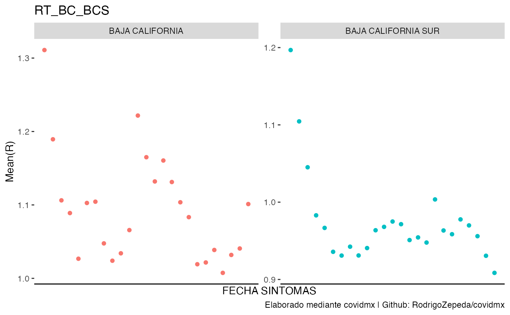

estima_rt Calcula el número efectivo de reproducción por fecha y entidad usando
los metodos de EpiEstim::estimate_R(). Por default calcula el número efectivo de
reproducción para cada estado.
Uso
estima_rt(
datos_covid,
entidades = c("AGUASCALIENTES", "BAJA CALIFORNIA", "BAJA CALIFORNIA SUR", "CAMPECHE",
"CHIAPAS", "CHIHUAHUA", "CIUDAD DE MÉXICO", "COAHUILA DE ZARAGOZA", "COLIMA",
"DURANGO", "GUANAJUATO", "GUERRERO", "HIDALGO", "JALISCO", "MÉXICO",
"MICHOACÁN DE OCAMPO", "MORELOS", "NAYARIT", "NUEVO LEÓN", "OAXACA", "PUEBLA",
"QUERÉTARO", "QUINTANA ROO", "SAN LUIS POTOSÍ", "SINALOA", "SONORA", "TABASCO",
"TAMAULIPAS", "TLAXCALA", "VERACRUZ DE IGNACIO DE LA LLAVE", "YUCATÁN", "ZACATECAS"),
group_by_entidad = TRUE,
entidad_tipo = c("Unidad Medica", "Residencia", "Nacimiento"),
fecha_tipo = c("Sintomas", "Ingreso", "Defuncion"),
tipo_clasificacion = c("Sospechosos", "Confirmados COVID", "Negativo a COVID",
"Inválido", "No realizado"),
tipo_paciente = c("AMBULATORIO", "HOSPITALIZADO", "NO ESPECIFICADO"),
list_name = "estima_rt",
min_date = as.POSIXct("2020-01-01", tz = Sys.timezone(), format = "%Y-%m-%d"),
max_date = as.POSIXct(Sys.time()),
method = "parametric_si",
config = if (requireNamespace("EpiEstim", quietly = TRUE)) {
EpiEstim::make_config(list(mean_si = 2.5, std_si = 1.6))
} else {
NULL
},
...
)Argumentos
- datos_covid
(obligatorio) Lista de
tibbles oduckdbs resultante dedescarga_datos_abiertos()oread_datos_abiertos()- entidades
(opcional) Vector con las entidades de las unidades medicas a analizar. Opciones:
AGUASCALIENTES,BAJA CALIFORNIA,BAJA CALIFORNIA SUR,CAMPECHE,CHIAPAS,CHIHUAHUA,CIUDAD DE MEXICO,COAHUILA DE ZARAGOZA,COLIMA,DURANGO,GUANAJUATO,GUERRERO,HIDALGO,JALISCO,MEXICO,MICHOACAN DE OCAMPO,MORELOS,NAYARITNUEVO LEON,OAXACA,PUEBLA,QUERETARO,QUINTANA ROO,SAN LUIS POTOSI,SINALOA,SONORA,TABASCO,TAMAULIPAS,TLAXCALA,VERACRUZ DE IGNACIO DE LA LLAVE,YUCATAN,ZACATECAS.- group_by_entidad
(opcional)
TRUEobtiene los casos para cada entidad reportando en cada fecha la entidad y los casos en dicha entidad.FALSEjunta lasentidadessumando sus casos en una sola observacion por cada fecha.- entidad_tipo
(opcional) Indica a que se refiere las
entidadesseleccionadas. Elige una de las opciones:Unidad Medica(entidad de la unidad medica),Nacimiento(entidad de origen del individuo) oResidencia(entidad donde reside el individuo).- fecha_tipo
(opcional) Selecciona si la fecha que se utiliza es la fecha de
Ingreso(si aplica), la fecha deSintomaso la deDefuncion(si aplica). El default es fecha deSintomas.- tipo_clasificacion
(opcional) Vector con el tipo de clasificaciones (por la prueba) a incluir:
Sospechosos,Confirmados COVID,Negativo a COVID,Inv\u00e1lido,No realizado- tipo_paciente
(opcional) Vector con el tipo de pacientes a incluir. Opciones:
AMBULATORIO,HOSPITALIZADO,NO ESPECIFICADO. Por default se incluyen todos.- list_name
(opcional) Asigna un nombre en la lista de datos a la base generada
- min_date
(opcional) Mínima fecha a partir de la cual estimar el RT.
- max_date
(opcional) Máxima fecha a partir de la cual estimar el RT.
- method
(opcional) Metodo para estimar el RT con
EpiEstim::estimate_R(). Por default se recomienda el método paramétrico de intervalo serialparametric_si.- config
(opcional) Configuracion para la estimacion del RT usando
EpiEstim::make_config(). Por default se utiliza una media del intervalo serial demean_si = 2.5y una desviación estandar destd_si = 1.6. Sin embargo, como el intervalo serial depende mucho de la variante se recomienda cambiarlo.- ...
(opcional) Parámetros adicionales para
EpiEstim::estimate_R().
Valor
Une a la lista de datos_covid una nueva entrada de nombre list_name
(default: estima_rt) con una base de datos (tibble) con los
resultados agregados.
estima_rt- Base de datos generara con los datos agregados (el nombre cambia si se usalist_name).dict - Diccionario de datos
dats - Datos originales (conexion a
duckdbotibble)disconnect - Función para desconectarte de
duckdb... - Cualquier otro elemento que ya existiera en
datos_covid
Detalles
Se sugiere establecer una mínima fecha y una máxima fecha con min_date y
max_date para la estimación pues los intervalos seriales de omicron son distintos
a los de la variante delta.
Ejemplos
# Para el ejemplo usaremos los datos precargados (datosabiertos) pero tu puedes
# correr el ejemplo descargando informacion mas reciente.
datos_covid <- datosabiertos
# Casos a nivel nacional por estado en todos
# \donttest{
suppressWarnings(
datos_covid <- datos_covid |> estima_rt()
)
#> Default config will estimate R on weekly sliding windows.
#> To change this change the t_start and t_end arguments.
#> Default config will estimate R on weekly sliding windows.
#> To change this change the t_start and t_end arguments.
#> Default config will estimate R on weekly sliding windows.
#> To change this change the t_start and t_end arguments.
#> Default config will estimate R on weekly sliding windows.
#> To change this change the t_start and t_end arguments.
#> Default config will estimate R on weekly sliding windows.
#> To change this change the t_start and t_end arguments.
#> Default config will estimate R on weekly sliding windows.
#> To change this change the t_start and t_end arguments.
#> Default config will estimate R on weekly sliding windows.
#> To change this change the t_start and t_end arguments.
#> Default config will estimate R on weekly sliding windows.
#> To change this change the t_start and t_end arguments.
#> Default config will estimate R on weekly sliding windows.
#> To change this change the t_start and t_end arguments.
#> Default config will estimate R on weekly sliding windows.
#> To change this change the t_start and t_end arguments.
#> Default config will estimate R on weekly sliding windows.
#> To change this change the t_start and t_end arguments.
#> Default config will estimate R on weekly sliding windows.
#> To change this change the t_start and t_end arguments.
#> Default config will estimate R on weekly sliding windows.
#> To change this change the t_start and t_end arguments.
#> Default config will estimate R on weekly sliding windows.
#> To change this change the t_start and t_end arguments.
#> Default config will estimate R on weekly sliding windows.
#> To change this change the t_start and t_end arguments.
#> Default config will estimate R on weekly sliding windows.
#> To change this change the t_start and t_end arguments.
#> Default config will estimate R on weekly sliding windows.
#> To change this change the t_start and t_end arguments.
#> Default config will estimate R on weekly sliding windows.
#> To change this change the t_start and t_end arguments.
#> Default config will estimate R on weekly sliding windows.
#> To change this change the t_start and t_end arguments.
#> Default config will estimate R on weekly sliding windows.
#> To change this change the t_start and t_end arguments.
#> Default config will estimate R on weekly sliding windows.
#> To change this change the t_start and t_end arguments.
#> Default config will estimate R on weekly sliding windows.
#> To change this change the t_start and t_end arguments.
#> Default config will estimate R on weekly sliding windows.
#> To change this change the t_start and t_end arguments.
#> Default config will estimate R on weekly sliding windows.
#> To change this change the t_start and t_end arguments.
#> Default config will estimate R on weekly sliding windows.
#> To change this change the t_start and t_end arguments.
head(datos_covid$estima_rt)
#> # A tibble: 6 × 17
#> ENTIDA…¹ ENTID…² ABREV…³ t_start t_end Mean(…⁴ Std(R…⁵ Quant…⁶ Quant…⁷ Quant…⁸
#> <chr> <chr> <chr> <dbl> <dbl> <dbl> <dbl> <dbl> <dbl> <dbl>
#> 1 01 AGUASC… AS 2 8 5 5 0.127 0.256 1.44
#> 2 01 AGUASC… AS 3 9 5 5 0.127 0.256 1.44
#> 3 01 AGUASC… AS 4 10 5 5 0.127 0.256 1.44
#> 4 01 AGUASC… AS 5 11 5 5 0.127 0.256 1.44
#> 5 01 AGUASC… AS 6 12 5 5 0.127 0.256 1.44
#> 6 01 AGUASC… AS 7 13 5 5 0.127 0.256 1.44
#> # … with 7 more variables: `Median(R)` <dbl>, `Quantile.0.75(R)` <dbl>,
#> # `Quantile.0.95(R)` <dbl>, `Quantile.0.975(R)` <dbl>,
#> # FECHA_SINTOMAS_start <dttm>, FECHA_SINTOMAS_end <dttm>,
#> # FECHA_SINTOMAS <dttm>, and abbreviated variable names ¹ENTIDAD_UM,
#> # ²ENTIDAD_FEDERATIVA, ³ABREVIATURA, ⁴`Mean(R)`, ⁵`Std(R)`,
#> # ⁶`Quantile.0.025(R)`, ⁷`Quantile.0.05(R)`, ⁸`Quantile.0.25(R)`
# Cambios en la fecha de estimacion siguiendo la recomendacion
# y obtenemos todo a nivel nacional
datos_covid <- datos_covid |> estima_rt(
min_date = as.POSIXct("2021-07-01"),
max_date = as.POSIXct("2021-09-01"),
list_name = "rt_min_max",
group_by_entidad = FALSE
)
#> Default config will estimate R on weekly sliding windows.
#> To change this change the t_start and t_end arguments.
head(datos_covid$rt_min_max)
#> # A tibble: 6 × 14
#> t_start t_end Mean(R…¹ Std(R…² Quant…³ Quant…⁴ Quant…⁵ Media…⁶ Quant…⁷ Quant…⁸
#> <dbl> <dbl> <dbl> <dbl> <dbl> <dbl> <dbl> <dbl> <dbl> <dbl>
#> 1 2 8 1.27 0.0192 1.23 1.24 1.26 1.27 1.28 1.30
#> 2 3 9 1.15 0.0172 1.11 1.12 1.13 1.15 1.16 1.17
#> 3 4 10 1.06 0.0160 1.03 1.03 1.05 1.06 1.07 1.09
#> 4 5 11 1.02 0.0154 0.985 0.990 1.00 1.02 1.03 1.04
#> 5 6 12 0.980 0.0151 0.951 0.956 0.970 0.980 0.991 1.01
#> 6 7 13 0.988 0.0152 0.958 0.963 0.977 0.988 0.998 1.01
#> # … with 4 more variables: `Quantile.0.975(R)` <dbl>,
#> # FECHA_SINTOMAS_start <dttm>, FECHA_SINTOMAS_end <dttm>,
#> # FECHA_SINTOMAS <dttm>, and abbreviated variable names ¹`Mean(R)`,
#> # ²`Std(R)`, ³`Quantile.0.025(R)`, ⁴`Quantile.0.05(R)`, ⁵`Quantile.0.25(R)`,
#> # ⁶`Median(R)`, ⁷`Quantile.0.75(R)`, ⁸`Quantile.0.95(R)`
# Casos a nivel nacional en los confirmados
datos_covid <- datos_covid |>
estima_rt(
tipo_clasificacion = "Confirmados COVID",
group_by_entidad = FALSE,
list_name = "rt_confirmados"
)
#> Default config will estimate R on weekly sliding windows.
#> To change this change the t_start and t_end arguments.
head(datos_covid$rt_confirmados)
#> # A tibble: 6 × 14
#> t_start t_end Mean(R…¹ Std(R…² Quant…³ Quant…⁴ Quant…⁵ Media…⁶ Quant…⁷ Quant…⁸
#> <dbl> <dbl> <dbl> <dbl> <dbl> <dbl> <dbl> <dbl> <dbl> <dbl>
#> 1 2 8 1.21 0.0295 1.15 1.16 1.19 1.21 1.23 1.26
#> 2 3 9 1.11 0.0269 1.06 1.07 1.10 1.11 1.13 1.16
#> 3 4 10 1.05 0.0256 1.00 1.01 1.04 1.05 1.07 1.09
#> 4 5 11 0.996 0.0246 0.949 0.956 0.980 0.996 1.01 1.04
#> 5 6 12 0.974 0.0243 0.927 0.935 0.958 0.974 0.991 1.01
#> 6 7 13 0.959 0.0242 0.912 0.919 0.942 0.958 0.975 0.999
#> # … with 4 more variables: `Quantile.0.975(R)` <dbl>,
#> # FECHA_SINTOMAS_start <dttm>, FECHA_SINTOMAS_end <dttm>,
#> # FECHA_SINTOMAS <dttm>, and abbreviated variable names ¹`Mean(R)`,
#> # ²`Std(R)`, ³`Quantile.0.025(R)`, ⁴`Quantile.0.05(R)`, ⁵`Quantile.0.25(R)`,
#> # ⁶`Median(R)`, ⁷`Quantile.0.75(R)`, ⁸`Quantile.0.95(R)`
#' # Cambios en los parametros de epiestim
# estos parametros no tienen razon de ser mas alla de mostrar como se cambian
datos_covid <- datos_covid |>
estima_rt(
group_by_entidad = FALSE,
list_name = "config_rt",
method = "uncertain_si", # Metodo de estimacion
config = EpiEstim::make_config(
mean_si = 2.4,
std_si = 0.3,
std_mean_si = 0.2,
min_mean_si = 2,
max_mean_si = 4,
std_std_si = 0.1,
min_std_si = 0.1,
max_std_si = 1.0
)
)
#> Default config will estimate R on weekly sliding windows.
#> To change this change the t_start and t_end arguments.
#> Warning: The distribution you chose for the mean SI is not centered around
#> the mean.
#> Warning: The distribution you chose for the std of the SI is not centered
#> around the mean.
head(datos_covid$config_rt)
#> # A tibble: 6 × 14
#> t_start t_end Mean(R…¹ Std(R…² Quant…³ Quant…⁴ Quant…⁵ Media…⁶ Quant…⁷ Quant…⁸
#> <dbl> <dbl> <dbl> <dbl> <dbl> <dbl> <dbl> <dbl> <dbl> <dbl>
#> 1 2 8 1.22 0.0487 1.13 1.14 1.18 1.21 1.25 1.30
#> 2 3 9 1.05 0.0286 0.996 1.00 1.03 1.04 1.07 1.10
#> 3 4 10 1.02 0.0156 0.988 0.992 1.01 1.02 1.03 1.04
#> 4 5 11 1.00 0.0154 0.973 0.978 0.993 1.00 1.01 1.03
#> 5 6 12 0.978 0.0150 0.949 0.953 0.968 0.978 0.988 1.00
#> 6 7 13 0.956 0.0149 0.927 0.931 0.945 0.955 0.966 0.980
#> # … with 4 more variables: `Quantile.0.975(R)` <dbl>,
#> # FECHA_SINTOMAS_start <dttm>, FECHA_SINTOMAS_end <dttm>,
#> # FECHA_SINTOMAS <dttm>, and abbreviated variable names ¹`Mean(R)`,
#> # ²`Std(R)`, ³`Quantile.0.025(R)`, ⁴`Quantile.0.05(R)`, ⁵`Quantile.0.25(R)`,
#> # ⁶`Median(R)`, ⁷`Quantile.0.75(R)`, ⁸`Quantile.0.95(R)`
# Casos en BC, BCS en los confirmados
datos_covid |>
estima_rt(
entidades = c("BAJA CALIFORNIA", "BAJA CALIFORNIA SUR"),
tipo_clasificacion = "Confirmados COVID",
group_by_entidad = TRUE,
list_name = "rt_bc_bcs"
) |>
plot_covid(
df_name = "rt_bc_bcs", df_date_index = "FECHA_SINTOMAS",
df_variable = "Mean(R)", df_covariates = "ENTIDAD_FEDERATIVA"
)
#> Default config will estimate R on weekly sliding windows.
#> To change this change the t_start and t_end arguments.
#> Default config will estimate R on weekly sliding windows.
#> To change this change the t_start and t_end arguments.

# }
# Finalmente desconectamos
datos_covid$disconnect()
#> ✔ Desconectado